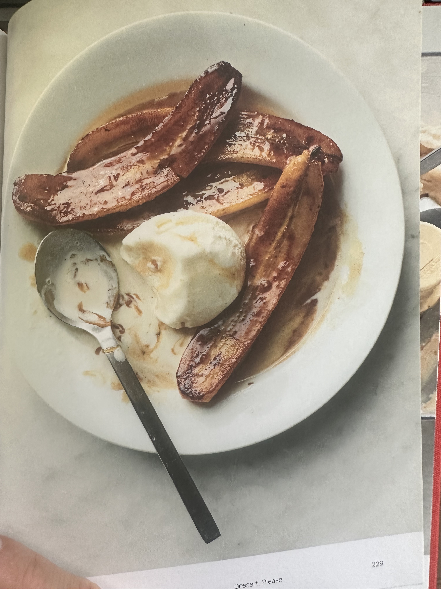

Banana Foster

Bananas sautéed in butter, then flamed in rum? What could possible go wrong? Serve with vanilla ice cream.
· · · Method · · ·
- Unsalted butter
- Brown sugar
- Bananas
- Dark rum
Melt a lof of unsalted butter in a sauté pan with a big sprinkling of brown sugar.
When the mixture foams, add some peeled and halved bananas and sauté them until lightly browned.
Add a jigger of darm rum to the pan and tilt it away from you. The stove’s flame will ignite the alcohol in a righteous woosh.
Carefully spoon the sauce over the bananas until flames go out.
Serve with vanilla ice cream and enjoy!